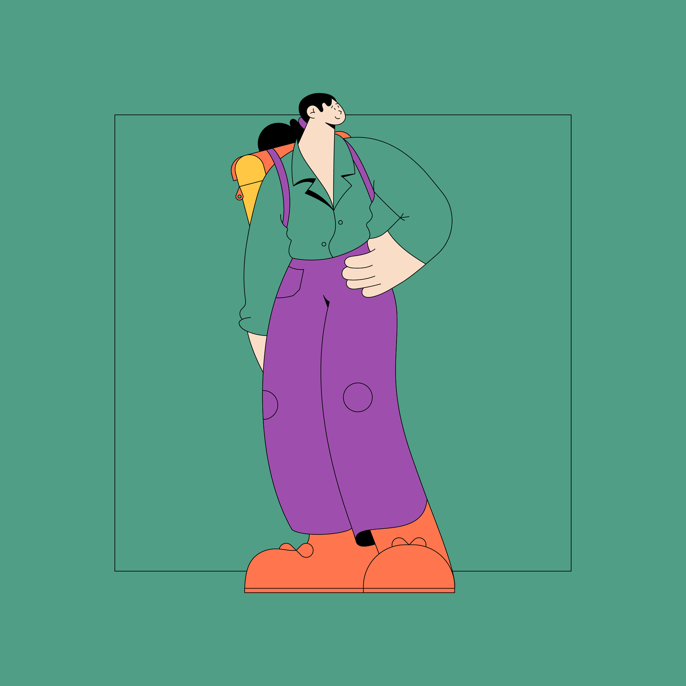
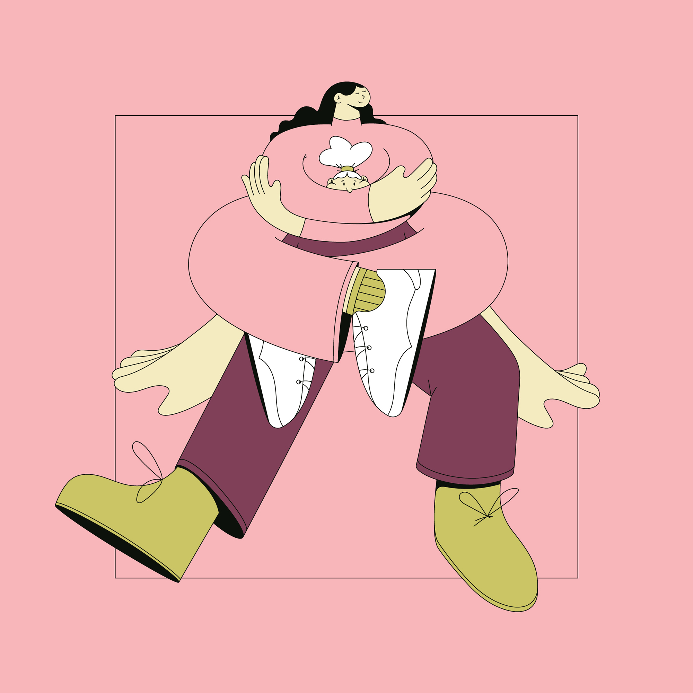

Swedish illustrator, designer and animator Linn Fritz
lives and works in London where she creates clean,
precise imagery in a trademark pastel palette for
a wide range of clients. Her fluid line work was
honed during her time at Hyper Island, “This journey
completely changed me as a person.”
she says, “It pushed me to work harder and gave me
the tools to succeed in the real world.”
Here Linn abandoned pen and paper and concentrated
on what digital could offer her.
As she puts it, “There’s more freedom drawing
digitally, and more room for mistakes.”
Some of her favorite projects orbit around
her interests of “feminism, clothes, plants and interior”
and she also looks for a good client relationship,
one with trust and creative freedom.




↑